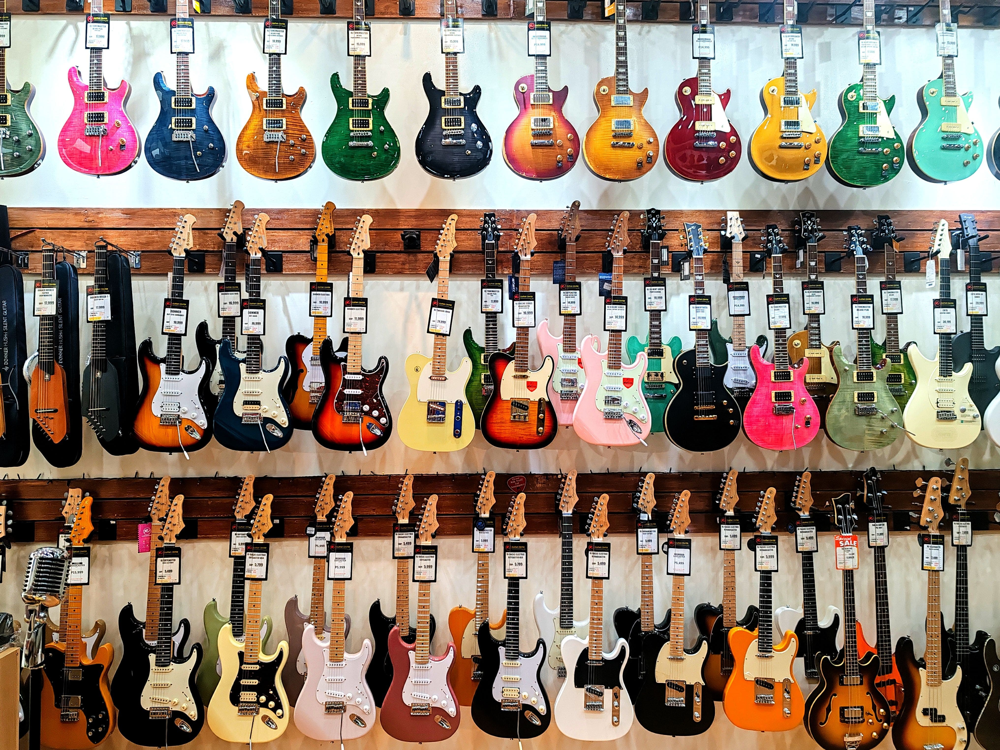
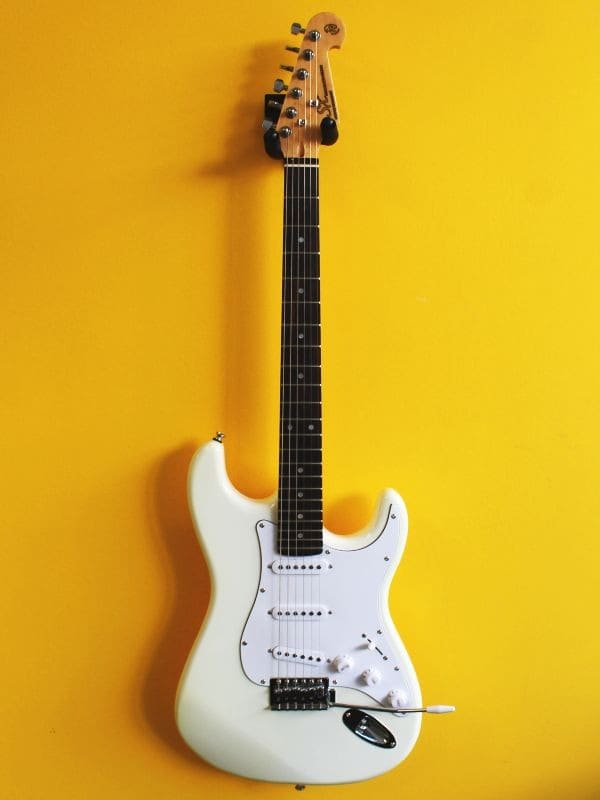
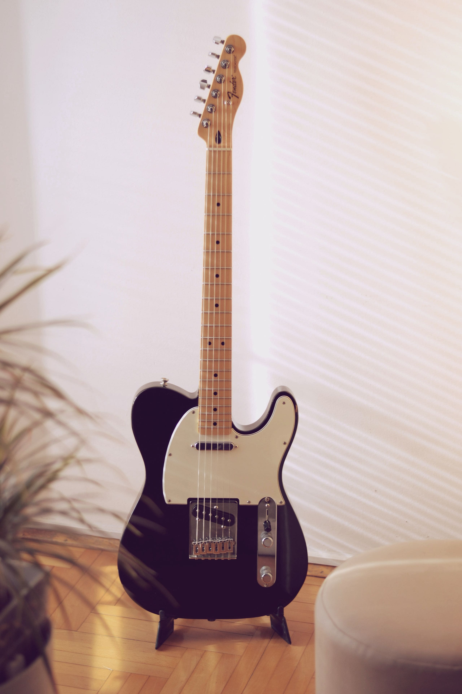
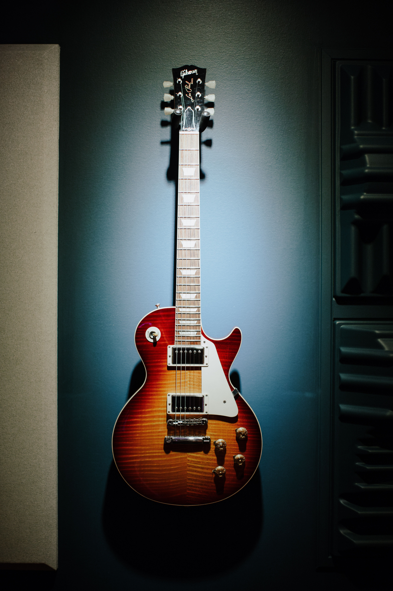

Explore the electric guitar collection at Suki's Guitar Shop, where quality, performance, and style come together. We offer a wide range of electric guitars, from classic designs to modern instruments, suitable for different musical styles such as rock, blues, jazz, and metal. Whether you're a beginner choosing your very first guitar or an experienced musician looking for your next upgrade, our collection has something for everyone. Find your perfect sound and take your music to the next level with Suki's Guitar Shop.

The Stratocaster is famous for its comfortable design, versatile sound, and smooth playability. With three pickups, it produces bright, clear tones, making it perfect for rock, blues, pop, and many other music styles.

The Telecaster is known for its simple design and distinctive twangy sound. Its bright, punchy tones make it a favourite among country, rock, and blues musicians. A reliable choice for players who love a classic sound.

The Les Paul is recognised for its solid body, elegant design, and powerful, warm tone. Its rich sound and strong sustain make it ideal for hard rock, heavy metal, and blues. Perfect for musicians seeking a bold sound.